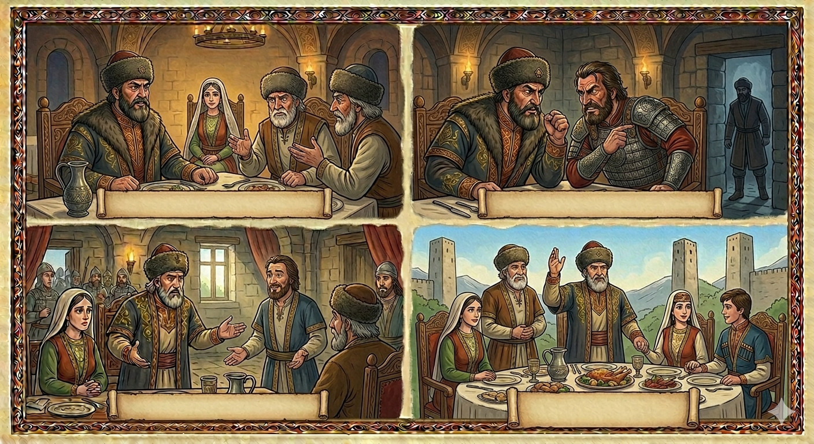

И.А. Дахкильгов. Хьехаме дувцарш - поучительные рассказы-притчи.
И.А. Дахкильгов. Хьехаме дувцарш - поучительные рассказы-притчи. Из ингушского фольклора.

Дикачун багара дикадар доал
Цхьан цӀихезача къонахчун дикеи хозеи йоӀ кхийна хиннай. Ши-ший воӀа из еха ухаш хиннаб цӀихеза къонахий. Цкъа зоахалола боаггӀашехьа а жоп луш мича хул. Бакъда, йиӀий дас цхьа хӀама деш хиннад: зоахалола хьа мел венача даьга цо хетташ хиннаб зоахалола ухаш бола кхыъ-кхе нах. ДӀа мел хаьттачо вожаш ӀотеӀабеш, царех во мел дар оалаш хиннад. ХӀаьта а, заохалола ухача нахах цаӀ нийъсавеннав шийга дӀа мел хаьттача сагах дикадар мара ца оалаш, уж хьалмогабеш, нахах цхьаккха во хӀама ца оалаш. "Дикачун багара дикадар мара далац", - аьнна, зоахалола венача цу къонахчун воӀага ший йоӀ дӀаеннай цун дас.
РУССКИЙ
Из уст хорошего человека лишь доброе слово услышишь
У одного известного мужчины выросла пригожая красавица-дочь. Начали к ее отцу наведываться почтенные мужчины и сватать эту девушку за своих сыновей. Как положено, при первом посещении сватов определенного ответа им не дают, но ведутся разговоры о разном. Так вот отец девушки, между прочим, расспрашивал каждого, вновь приходящего, о других мужчинах, которые ранее приходили сватать его дочь. В ответ каждый из сватающихся всячески чернил и хулил других своих соперников. Но вот из этих отцов нашелся один, который на все расспросы о других сватающихся людях говорил тоько хорошее, восхвалял их и не сказал ни одного порочащего их слова. "Из уст хорошего человека лишь доброе слово услышишь", - сказал старик и выдал замуж свою дочь за сына этого мужчины.
ENGLISH
A good man will only speak kindly
A well-known man had a beautiful daughter. Respectable men began visiting her father to propose marriage on behalf of their sons. As is customary, no definitive response was given to the suitors on their first visit; instead, casual conversation was engaged in. The girl's father therefore asked each newcomer, in passing, about the other men who had previously come to woo his daughter. In response, each suitor did his utmost to slander and disparage his rivals. However, one father, when asked about the other suitors, spoke only well of them and praised them, not uttering a single word to discredit them. "A good man will speak kindly," said the old man, and he gave his daughter in marriage to this man's son.
НОХЧИЙН
Дикачун багара дика дерг долу
Цхьана цӀехазачу къонахчун дикий хазий йоӀ кхиъна хилла. Ше-шен воӀан иза йеха оьхуш хилла цӀехаза къонахий. Цкъа захална боггӀушехь а жоп луш мича хуьлу. Бакъду, йоьӀан дас цхьа хӀума деш хилла: захална схьа мел веъначу дега цо хоьттуш хилла захална оьхуш болу кхин нах. ДӀа мел хаьттинчо вуьйш охьатеӀабеш, царах вон мел дерг олуш хилла. ХӀета а, захална оьхучу нахах цхьаъ нисвелла шега дӀа мел хаьттинчу стагах дика дерг бен ца олуш, уьш хьалмагабеш, нахах цхьа а вон хӀума ца олуш. "Дикачун багара дика дерг бен далац", - аьлла, захална веъначу цу къонахчун воӀе шен йоӀ дӀайелла цуьнан дас.
ПОГОВОРКИ